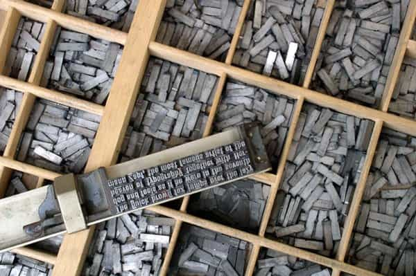
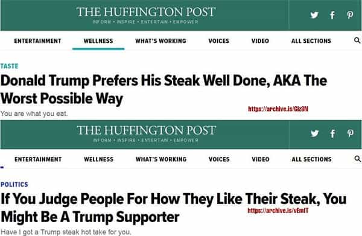
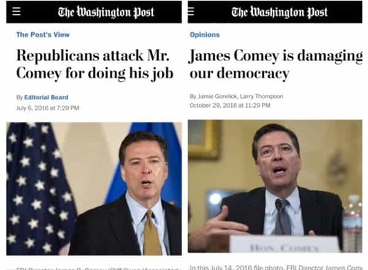
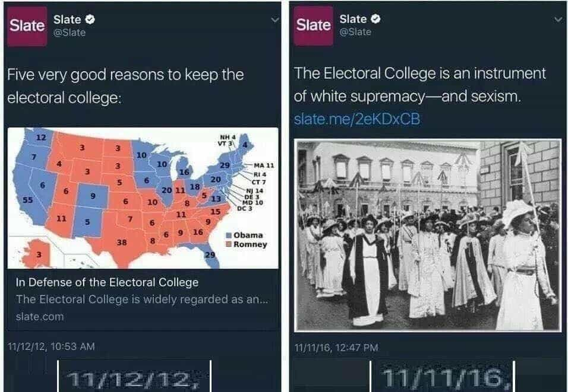

André is a young European who left his decaying country in 2012 for greener pastures. He enjoys exploring subterranean places, reading about a host of interconnected topics, and yearns for Tradition.


Journalists are supposed to follow a set of rules and values called deontology. These rules say journalists should strive to be impartial, objective, and to inform their readers. We know well this is not the true nature of their activity.
Most MSM journalists today if not all are spinsters. They cherry-pick their facts and craft narratives around to steer people towards an untold yet ever-present agenda. They make up stereotypes while attacking other stereotypes, they make up ideas while attacking other ideas, as it suits the editorial line of their employer.
In the name of information, journalists create and fulfill an artificially constructed consciousness. They are paid to do so. They believe what they’re doing is normal or cool, just like the Ministry of Truth in Orwell’s 1984, where officers burn archives then forget they just destroyed records (soon to be rewritten); your average leftist journalist spins all the time, follows all the time, yet doesn’t even know he spins and follows.
What liberals do…
…and what they (want to) believe we do. Notice how both pictures come from their media and “art”, not from extraneous facts
If you lend an ear to leftist historians, up to perhaps to age of discoveries, the West didn’t know much. Everybody were locked into their own towns and fields. Well, this is not true. Europeans had known about the Silk Road from time immemorial. Kings and the clergy had their messengers, their events, their gatherings. Individuals like Saint Bernard or Saint Thomas of Aquino were quite familiar with communicating at a distance.
It was just much slower than today—and quite of a luxury as well. Common folk had to rely on minstrels, travelers, and on their own travels. Most communication was done orally. Academics today love to point out how unreliable the bush telegraph is, but at least this communication is done naturally between common people rather than top-down from a shadowy agenda.
Also, as slow as this word-to-mouth communication was, people then did not need more: they could make a living on their own, with the insurance that they could consume it themselves or sell it. Markets tended to be stable, and whether you were a field-tiller or a craftsman, you didn’t need to know about the latest fad not to be left behind. People were also much less bored and in need of diversions. Didn’t have newspapers, didn’t need them.
Then came the printing press. What had been done by scribes secluded in monasteries became partly automatized and multiplied. Bibles were printed. Then pamphlets. By the time, Protestantism had well developed, clever princes tried to use it to their advantage, and the Catholic church counter-attacked by launching one of the most manipulative orders ever created.
More power to independent people meant chaos. Printing outside of the rigid hierarchy of the Church meant a never-ending contest of ideas, systems, tastes, experiences, and egos. The hypocritical journalists of now who chide “trolls” while sniffing their own written farts should remember that trolling appeared as a side-effect of the printing press, as it became possible to say anything remotely instead of being necessarily confrontable. Plus, trolling helps to think of things to talk about with a girl.

Nevertheless, printing what you wanted was not that simple. First, literacy was still the hallmark of a comfortable upbringing, and second, you had to be able to print. You had to know a printer, had to make a deal with him and pay him. Not to mention the dissemination of your lovely printed book. It was always possible to print in a country with virtually no censorship, then smuggle books, but who was to receive them and share them?
No matter what you had to say, you always needed to address a noble-bourgeois audience, which meant catering to fashionable topics or debates. Otherwise, your material would be simply ignored. Authors who weren’t too well-known had to rely on booksellers who conspired to arrange a discrete monopoly on over-the-counter books. Yep, the world of “culture” has always been murky, and its members believe this is a sign of their superior intelligence.
As “culture” developed, with its train of noise, untold rivalries and social parasitism, periodic journals were printed at an ever-faster pace. Eighteenth century bi-annuals were replaced by daily or weekly newspapers. Which meant a great need, not for amateur gentlemen, but for people who could write constantly. Such people would be called journalists.

If you believe journalism is about informing the public, forget it immediately. There is no such thing as an automatic progress which just makes happen what seems desirable. If an unbiased, all-objective information seems desirable, that does not mean someone will pay for it or even manage to get it. Even the CIA Factbook was made in the first place because objective information would benefit the CIA itself, not “enlighten the masses” or whatever a leftist salesman would say.
A journalist is basically someone who is paid to write on particular issues, in a well-defined format, as his boss sees fit. A journal belongs to someone—no matter if the owner is public or private—who usually has its own aims. Whether the newspaper has to simply sell or shape the opinion, it always aims at something else than merely informing.
(Even ROK has an agenda, and I’m fine with it, because I believe it is sound and fair, but I’d never pretend I write for the sole love of truth or as if I was a disembodied soul with no consciousness of its own. Any writer having such pretenses is a hypocrite or a liar.)

Back to the nineteenth century. Newspapers were just like factories. As plant workers had to churn tangible products, journalists had to churn out impressions. They were like paid artists for the ephemeral, creating appearances that would sell, or satisfy, or infuriate—anything as long as it suited the editorial line of their employer. Journalists did not become whores. They were paid employees, to put it politely, from day one. But at least the blue collar workers had to pretense to say the truth or illuminate or whatever BS that sells.
Let’s say you were born with a high verbal IQ, a knack for writing, and some ideas. What could you do? You may consider writing books, become an intellectual, but book writing takes time and often doesn’t pay. If you can’t live like an annuitant, you must be an employee.
If you choose the written words, you have to conform to a preexisting editorial line, to a particular milieu that already existed before you did, in hope of being granted a job. Creating a journal demanded not only experience but capital as well. Can you pay a printer? Would a banker trust you if you asked him for a loan so you can start a journal?
As the nineteenth century was an epoch of exceptional growth, some people had this capital or trust, and many independent journals were formed. Many, though, were bought off, or chased away, or censored. The elite does not want you to become an influencer, unless, of course, you remain a perpetual servant of their agenda.
This is why mild conservatives are accepted as a stooge opposition, along with the alt lite, whereas those who really want to save civilization and its creators are reviled. The elites want to destroy civilization, so, their journalists, who all depend on them socially and financially, foster their agenda while lying to themselves on the nature of what they do.

So-called investigators are paid by Darth Soros to “investigate” on convenient targets while turning a blind eye on other things, like mass immigration, or upholding a mandatory narrative which rests not on truth but on pure social conformism—muh minorities r always good, muh white males r always wrong.
Perhaps the “fake news” offensive has been crafted, not only to maintain the masses into the blue pill matrix, but also to reassure the frail employees that they are serving truth and progress. Which is already dubious, as worshiping an arbitrary strand of “progress” has nothing to do with objectivity, just as the contemporary humanities are rather a Hollywood for nerds than a place of real knowledge, but you can’t ask vapid girls to get to this level.
No one writes for the sake of truth alone. Independent writers or journalists also speak of what they think relevant. They will mention XYZ facts because these are important, or, at least, ensure a modicum of success. Just like men tend to read Miyamoto Musashi quotes, not merely because he existed, but because he’s interesting.
Mainstream journalists are courtiers. They are paid by global elites to do their bidding. They work in cities just like filmmakers work in grand obscure studios—because their activity lies in creating perceptions, in shaping fashions, ideas, mottos, norms. The difference between a marketer, a journalist and a filmmaker is only of scale and means. The aim, and the bottom, is the same.
We are different, because we are bottom-up. When mainstream journalists sold their souls, we are upholding ours. The problem with this is that we’re ill-paid. The globalists and the boomers tend to concentrate all the money, and it doesn’t take a rocket scientist to witness that the non-mainstream outlets tend to all lack money. Such is the price of independence.
What? You want to be free and independent? You’re a NAZI!
We ought to have our own money elsewhere, and have a lot of independent journalists around, so that autonomous individuals from our side can work or investigate and help masculine men to shape their own consciousness.
Read Next: Journalists Ask Stupid Questions To Push Their Narrative And Conceal The Truth